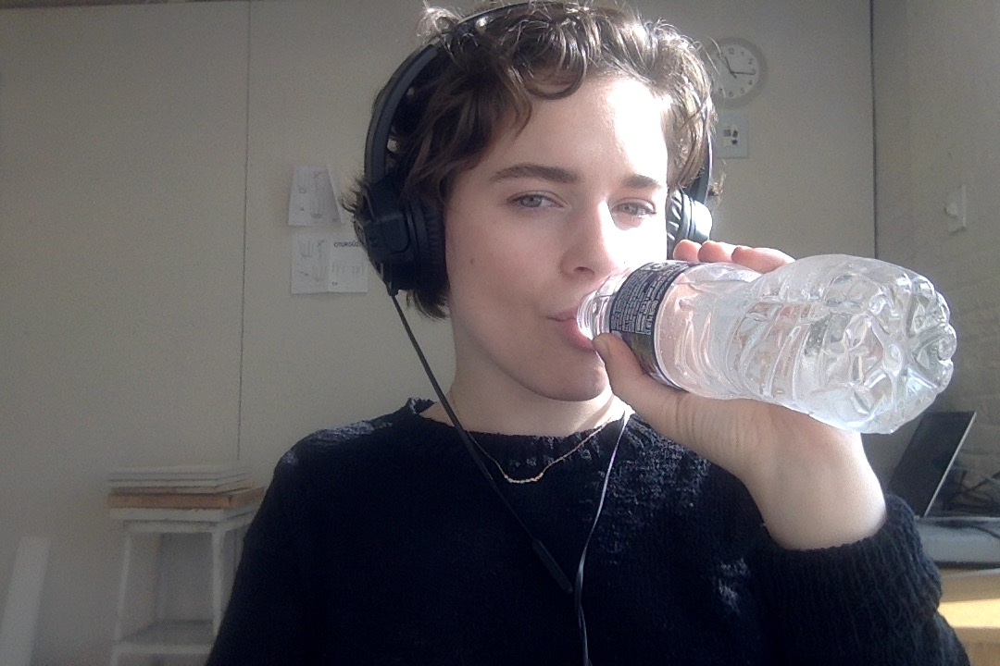
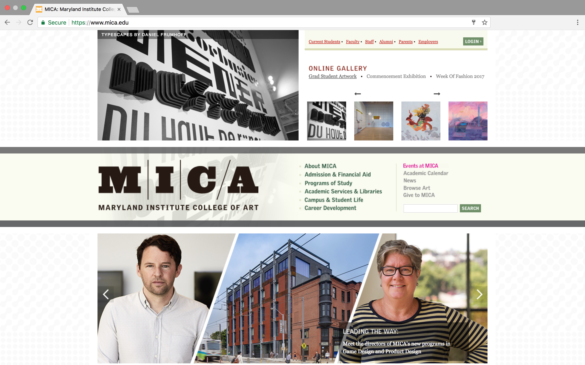
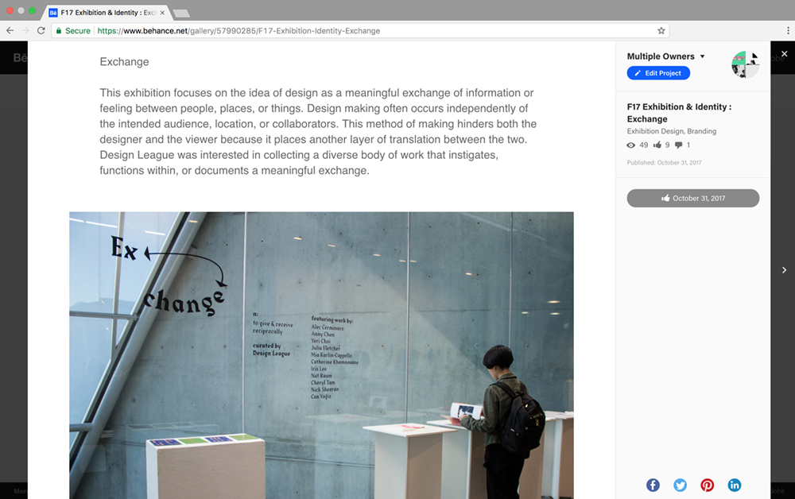
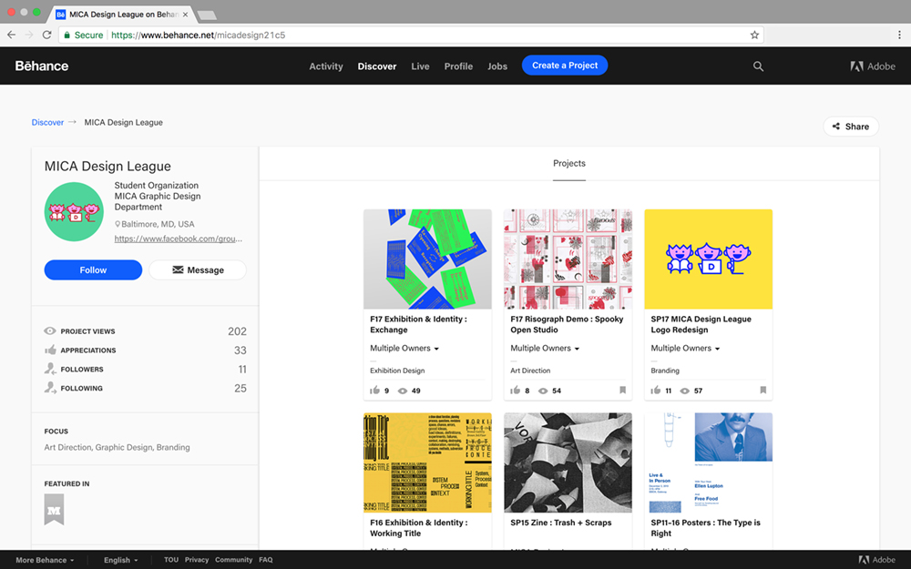
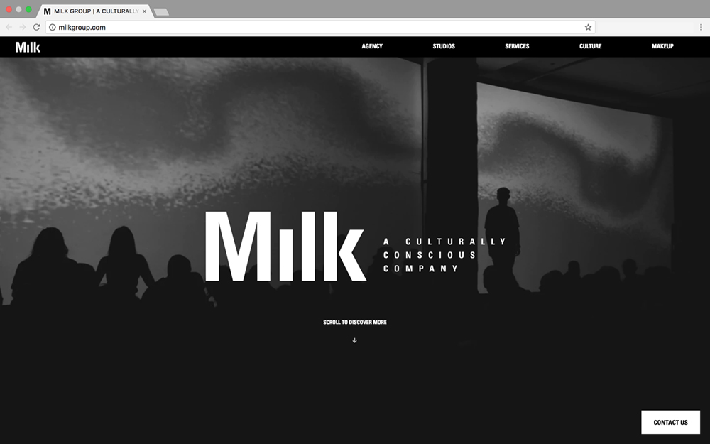
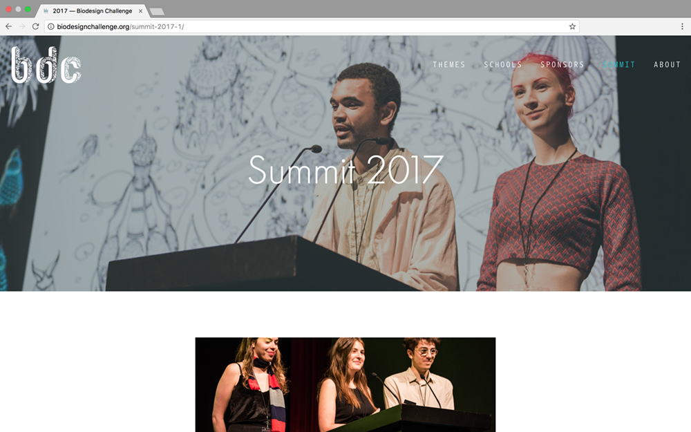

Hanna-Mae Greenfield is an artist and front-end web developer currently based in Baltimore, Maryland. She is completing her BFA at MICA, where she studies Fine Arts + Graphic Design. She recently directed Exchange, a Design League exhibition that explores interaction + collaboration in the design process, at Bronze Gallery. She has worked in photo retouching at Milk Studios, + her web development work was displayed at the MoMA Biodesign Challenge Summit in New York.